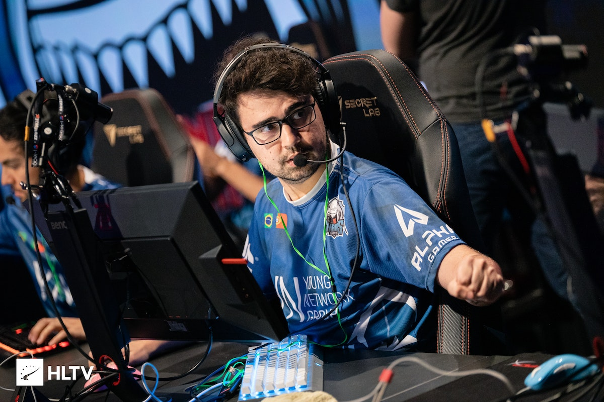
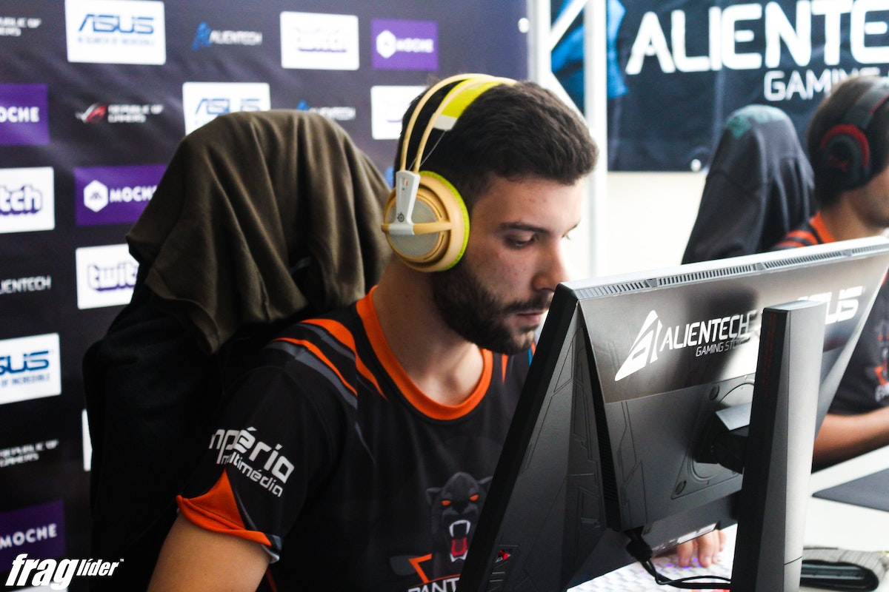
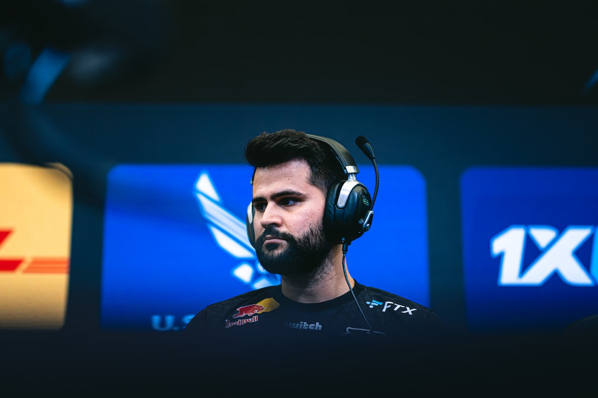

IEM Major Rio 2022: estrangeiros comemoram vaga da Imperial "Coração quente"
A Imperial cravou a vaga para o IEM Major Rio 2022, o campeonato mundial de Counter-Strike: Global Offensive (CS:GO) a ser disputado no Rio de Janeiro, de 31 de outubro a 13 de novembro, para felicidade não só dos brasileiros, mas também da comunidade internacional. Muitos jogadores estrangeiros, como Oleksandr "s1mple", Finn "karrigan" e Nikola "NiKo", se manifestaram, nas redes sociais, comemorando a classificação de Gabriel "FalleN" e companhia.
Sharks elimina Complexity da BLAST Fall Showdown
Case anuncia analista português
Valve mantém punições de guerri e Apoka, diz FURIA
Jogo destaque
MIBR